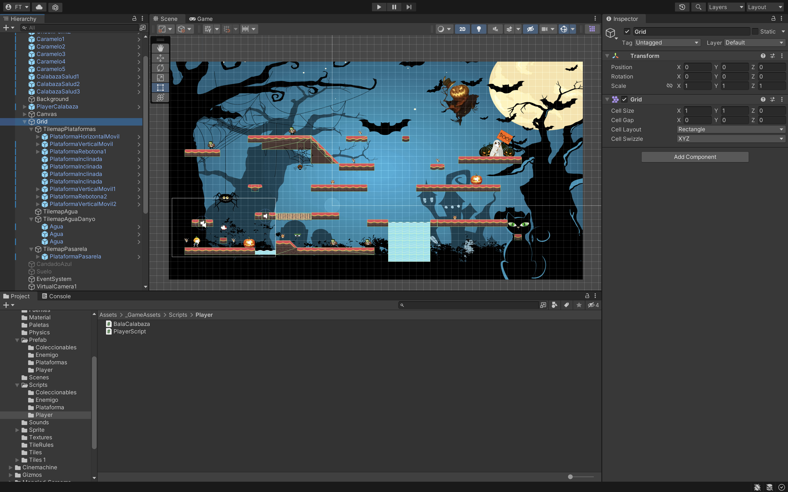
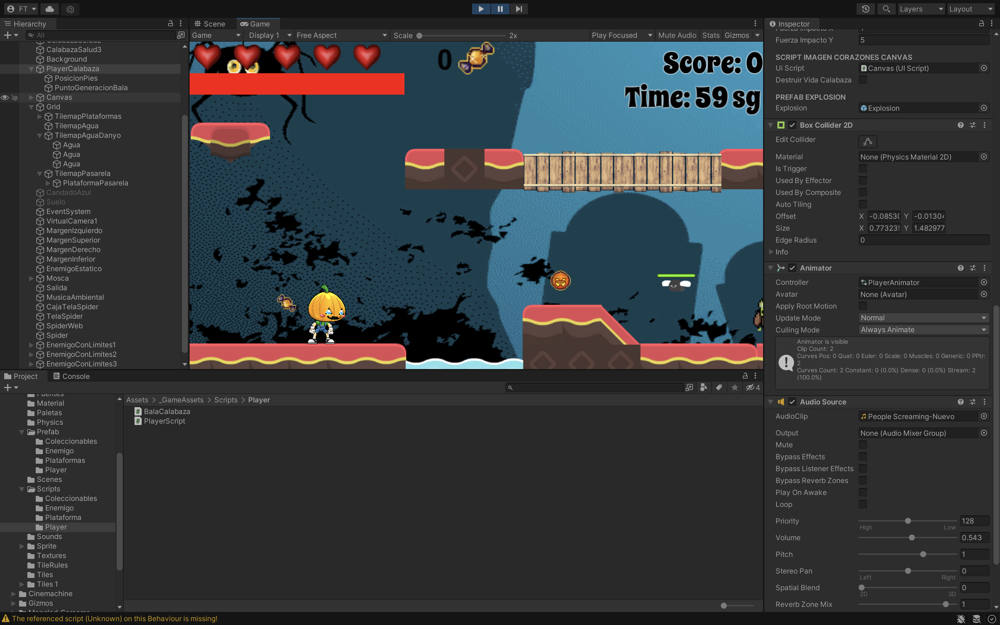
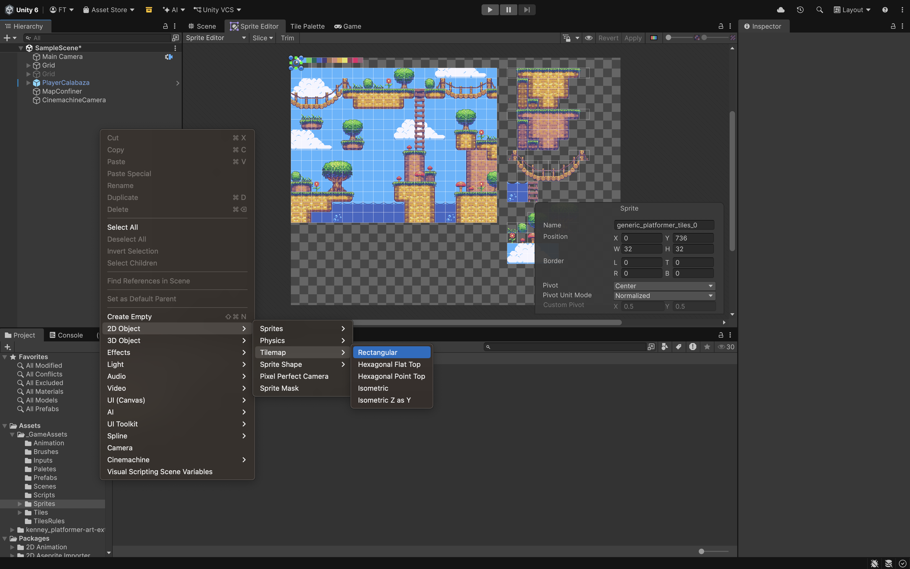
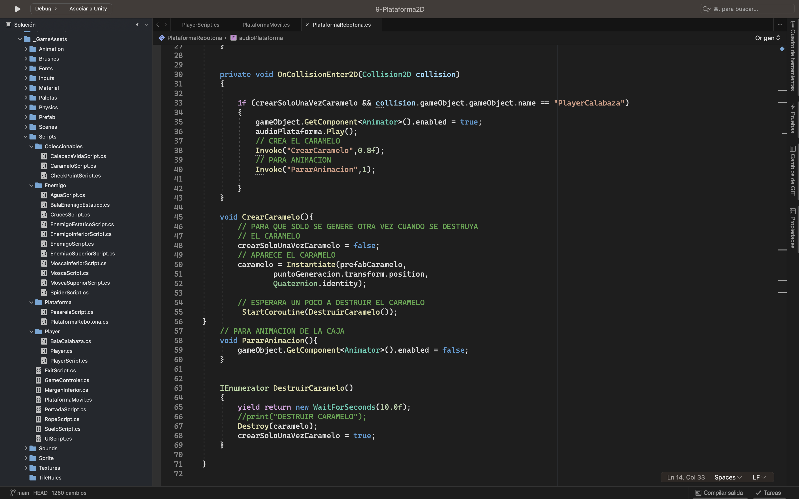

El Juego habrá que crearlo de tipo 2D (Built-In Render Pipeline).
.
Características de un Juego 2D:
• Son Sprites imágenes planas.
• La forma de componer el escenario mediante Tilemaps (Azulejos).
• Usaremos Cinemachine.
En nuestro juego tendremos:
• Player tendrá animaciones y que dispare.
• Marcador de Vidas (corazones), objetos que tenga que recoger y que nos dé puntos, segundos, record……
• Plataforma Móvil en horizontal y vertical, otra rebotona y que salga un objeto si le damos por debajo
(con animación).
• Plataformas con materiales físicos….
• CheckPoint para que si llega a un punto determinado del juego y le matan vuelva a ese punto y no tenga
que empezar de nuevo.
• Enemigos que se mueven (con Joins o de un lado a otro…….) y otro estático para acabar el juego que nos
dispara.
Descargas Fuentes y plataformas 2D:
• Google Fonts, fontsquirrel.
• https://es.cooltext.com/.
• https://kenney.nl/assets.
• https://ansimuz.itch.io/.
• https://opengameart.org/content/platformer-art-complete-pack-often-updated.
En _GameAssets crear carpetas para que este todo más ordenado de:
• Animation.
• Brushes.
• Material.
• Paletas.
• Physics.
• Prefabs.
o Enemigos.
o Coleccionables.
o Plataformas.
o Player….
• Scenes.
• Scripts.
o Enemigos.
o Coleccionables……..
• Sounds.
• Sprites.
o Enemigos.
o Enviroment.
o Player.
• Textures.
• TileRules.
• Tiles……
Lo primero que haremos es crear el entorno mediante las Tiles.

Necesitamos un *.png (Hoja con todos los sprites) y la arrastramos a una carpeta de
_GameAssets/Sprites. Tenemos que trocearla. (Window/2D/Sprite Editor).
Crear un TileMap/Rectangular lo llamaremos TileMapPlataformas (Window/2D/TileMap). Tendremos que arrastrar
los Sprites al TileMap. Y desde aquí podremos ir dibujando nuestras plataformas.
Tendremos que tener: Plataformas con Efectos, Rebotonas, con animaciones, con materiales físicos
(deslizantes…). Pueden ser prefab que los incluiremos en Prefab Brushes.
Esto es una idea de lo que podemos utilizar:
• TilemapPlataformas.
o Pintaremos las plataformas desde la paleta y añadiremos estos Prefabs que crearemos mediante
los Brushes:
- PlataformaHorizontalMovil con Animación.
- PlataformaVerticalMovil con Animación.
- PlataformaInclinado con Material Fisico.
- PlataformaRebotona.
• PuntoGeneracionCaramelo.
• Componente:
o Script PlataformaRebotona.cs y AudioSource.
o Si le damos por debajo tiene que hacer una animación hacia arriba y salir un caramelo ….
Y recogerlo.
• TilemapAgua Efecto BouyancyEffector2D (flota).
• TilemapAguaDanyo Script Agua.cs.
o Prefab Agua…..
• TilemapPasarela Efecto SurfaceEffector2D (cinta deslizadora) Script Pasarela.cs para que se
active y desactive por tiempo el Tilemap.
o Prefab PlataformaPasarela.
Necesitamos un Personaje 2D que tenga animaciones de Idle, Jump, Walk….
Arrastrar el Sprite 2d de Idle a la Escena y se crea el Player.
Necesitaríamos incluir en el Player:
• El Player contendrá:
o PosicionPies GO vacío para saber si podemos saltar.
o PuntoGeneracionBala GO vacío.
• Componentes:
o RigidBody 2D, BoxCollider 2D, Animator, AudioSource.
o El Animator tendrá 3 Clips y mediante parámetros en la animación cambiaríamos de una
animación a otra:
- Idle.
- Walk.
- Jump.
• Variables:
o De tipo: Enum EstadoPlayer {Pausa, AndandoDerecha, AndandoIzquierda, Saltando, Sufriendo}.
- Saltando cuando damos al Espacio.
- Sufriendo es cuando nos quitan vidas y no se moverá.
- Pausa es para solo saltemos 1 vez.
o Inicializar EstadoPlayer estado = EstadoPlayer.Pausa;.
o [SerializeField] LayerMask floorLayer; // Capa para las colisiones (Suelo) para que sepamos
si puede saltar o no.
o Para la barra.
- vidaBarra = 1 Cuando esta la barra de vida entera.
- quitarVidaBarra = 0.2f quita vida de la barra cuando colisiona con el enemigo.
o Para los corazones.
- saludMaxima = 100.
- vidaMaximaBarra = 100f.

En el Update recogeremos el estado y moveremos la bala del disparo. Y el movimiento físico lo haremos en el FixedUpdate.
• Update.
o Espacio salta con el espacio (GetKeyDown(KeyCode.Space)).
- Estado = estadoPlayer.Saltando.
o Dispara con la Z (GetKeyDown(KeyCode.Z)) y si no está en Pausa.
- Si estado = EstadoPlayer.AndandoIzquierda/AndandoDerecha el disparo saldrá a
la Izquierda/Derecha con AddRelativeForce con sonido.
o Si está sufriendo y toca el suelo (Método EstaEnElSuelo())) lo dejamos en pausa.
- Método EstaEnElSuelo().
• FixedUpdate Haremos los movimientos del Player.
o Movimiento en Horizontal X con GetAxis. (xPos).
o ySpeedActual = rb2D.velocity.y la velocidad de Y que tiene actualmente.
o Si el Player está Sufriendo no se moverá.
- Esto lo hacemos para que no continue con el script poniendole un "return".
o Primero comprobamos si tiene que andar.
- Si Math.Abs(xPos) > 0.01f Anda y si no se para (animación).
o Si su estado es saltando.
- EstadoPlayer.Pausa para que solo salte una vez.
- Si EstaEnElSuelo() rb.velocity = new Vector2(xPos * speed , jumpForce).
- Si no EstaEnElSuelo() rb.velocity = new Vector2(xPos * speed , ySpeedActual).
o Y Sino xPos > 0.01f Hacia la derecha.
- Le damos su rb.velocity = new Vector2(xPos * speed , ySpeedActual).
- Comprobar si esta su estado a la izquierda hay que rotar el player con localScale.
o Y Sino xPos < -0.01f Hacia la izquierda y hacer lo mismo que la derecha.
Si vemos que la animación se desliza tenemos que chequear en la Animator del Player el Apply Root Motion y darle más fuerza para que se mueva.
• Métodos:
o ContarSegundos.
- Tendremos un tiempo de 60 segundos.
- Y hay que llamar a este método cada segundo e ir restando ese tiempo al contador.
o QuitarVidas (quitar corazones).
- Quitar vida.
- Sonido.
- Si vidas > 0.
• Llamar a Metodo UIScript.RestarVida() (explicado más adelante).
• Hay que volver a dejar la barra de vida entera.
- Si vida = 0.
• Explosión del Player.
• Finalizar juego Menú portada.
o FinalizarJuego.
o IncrementarPuntuacion.
o EstaEnElSuelo.
• Le hacemos un OverlapSphere muy pequeño y comprobamos si estoy chocando
con el suelo Physics2D.OverlapCircle.
o RecibirSalud (int incrementoSalud) por parte de un personaje (barra).
- La salud nunca podrá sobrepasar a la saludMaxima.
- vidaBarra += incrementoSalud / vidaMaximaBarra.
- barraDeVida.fillAmount = vidaBarra.
o RecibirDanyo(int danyo) Cuando me tocan los enemigos.
- vidaBarra += quitaVidaBarra.
- barraDeVida.fillAmount = vidaBarra.
- salud -= danyo;.
- Si la salud <= 0.
• QuitarVidas() Quitamos corazones.
• salud = saludMaxima (100) Volvemos a inicializar a 100 la salud.
- CambiarPosicionPlayer().
o CambiarPosicionPlayer para cuando nos den ir hacia atrás o adelante dependiendo de
hacia dónde mire el Player.
- Comprobar estado del Player.
- AddRelativeForce (new Vector2( fuerzaImpactoX, fuerzaImpactoY),
ForceMode2D.Impulse).
- Estado Sufriendo.
ForceMode2D Añade un impulso de fuerza instantáneo al rigidbody2D, utilizando su masa.
o GetVidas retornar las vidas.
o GetPuntos retornar los puntos.
o SaltoAlVacio y obtenemos la posición que tenía nuestro Player.
- GameControler.GetPosition(). Es un método del Script GameControler static (Lo veremos
más adelante).
El Input System es un paquete diseñado para gestionar las entradas de dispositivos (teclado, ratón, mandos, pantallas táctiles) en Unity. Permite mapear acciones (como "saltar" o "mover") a diferentes botones físicos, facilitando el soporte multiplataforma, la reconfiguración de controles y la detección automática de mandos.
• BackGround.
• Música juego.
• Caramelos (Coleccionables). Componentes:.
o OnCollisionEnter.
- Player.IncrementarPuntuacion().
o ParticleSystem, AudioSource.
• Salud. Componentes:
o OnTriggerEnter.
- Player.RecibirSalud().
o ParticleSystem, AudioSource.
• Enemigo móvil Será un prefab. Se moverá de izqda a derecha con unos limites.
o LimiteIzquierda y LimiteDerecha GO Vacio.
o Malo.
- ColliderSuperior EnemigoSuperior.cs.
• Player.IncrementarPuntuacion() y se destruye el Enemigo.
- ColliderInferior EnemigoInferior.cs.
• Si toca por los lados quitara vidas al Player.RecibirDanyo().
- Componentes.
• Script Enemigo.cs. Pasaremos por parámetro:
o Límites.
o Se moverá con Translate.
o Método CambiarOrientacion() usar sprite.flip.
• ParticleSystem.
• Animación de movimiento.
El ColliderSuperior será cuando lo toque por encima y el ColliderInferior si le toca por los lados.
• Enemigo estático que lanzará la bala hacia donde este el player. Componentes:
o Script.
- Vector2 posicionPlayer = posición player – posición enemigo estático.
- La bala se lanzará con AddRelativeForce (posicionPlayer * potencia disparo).
- AudioSource.
o Bala del enemigo estático..
- Si da al Player.QuitarVidas().
- Player.CambiarPosicionPlayer() para que se mueva hacia un lado.
• Mosca Se moverá de izqda a derecha con unos límites y tendrá un slider para las vidas.
o Tendrá los limites y las colisiones como el Enemigo movil.
o Malo.
- Canvas.
• Slider.
o BackGround (rojo).
o Fill Area/Fill (verde).
- Componentes.
• Script Mosca.cs. Pasaremos por parámetro:
o Limites.
o Se moverá con Translate.
o Método CambiarOrientacion().
o Método QuitarVida(). Cuando la bala del Player le dispare.
- slider.value - 25 Valor inicial del slider 100.
• Animación de movimiento.

• CheckPoint Guarda la posición del Player y recoge todas las puntuaciones que tengamos en ese
momento, coleccionables… Y si volvemos a empezar no tendremos que volver a pasar todo el juego.
Componentes:
o Script CheckPoint.cs recoge todo y lo guarda en el Script GameController.cs (Lo veremos
más adelante).
• Spider.
o CajaTelaSpider: Necesitamos poner una caja o algo que contenga un componente Spring Join
2D para que en nuestro caso conecte con el RigidBody del Spider.
o TelaSpider es un objeto de tela de araña.
o SpideWeb GO vacío con un componente Line Renderer.
- Para unir 2 o más puntos y que parezca el hilo del spider.
- Contiene un Script Rope.cs.
• Pasamos por parámetro el transform del Spider.
• Recoger el componente LineRenderer.
• Y en el Update establece la posición del vértice en la línea
lr.SetPosition(1,spidertransform.position).
o Spider. Script Spride.cs.
- Si colisiona con el Player.RecibirDanyo().
• MargenIzquierdo.
• MargenSuperior.
• MargenDerecho.
• MargenInferior con un Script MargenInferior.cs.
o Si el Player colisiona con el.
- Player.QuitarVida().
- Player.SaltoAlVacio().

• Salida Script Exit.cs Vuelve a la Portada.
Contendrá métodos y todos serán static para poder llamarlas sin necesidad de hacer referencias….
• StorePosition guardamos la position x e y del Player.
• GetPosition que retornara un Vector2 y cogemos el Script que pusimos en el Player.
• StorePuntos.
• GetPuntos.
• StoreCaramelos.
• PararAnimaciones Recoger todos los objetos que tengan un tag = “Animaciones” y guardarlos
en un Array ya desactivarlos cuando el juego se pare.
El Canvas contendrá lo siguiente:
• Puntuación Texto.
• BarraVidaAbajo Image.
• BarraVidaArriba Image.
• Panel Vidas (Corazones).
o Componente Horizontal Layout Group para poner los corazones en horizontal.
• Texto de Objetos recogidos Text.
• Imagen del Objeto Recogido Image.
• Tiempo Text.
• GameOver Image.
Barra de Salud con una saludmaxima de 100. Cuando no tenga Salud le quitaría 1 vida. Está
formada por:
• BarraVidaAbajo.
o Componente Image color naranja con Source Imagen a None.
• BarraVidaArriba.
o Componente Image color rojo con Source Imagen a Pixel (transparente).
- Image Type Filled.
- Fill Method Horizontal.
- Fill Origin Left va hacia la izquierda.
- Fill Amount 1.
El Canvas tiene asociado un Script UIScript.cs. Pasaremos por parámetro:
• ImágenesVida[] Contendrá todos los corazones nada más empezar el juego en el Start.
• PrefabImagenVida será el corazón.
• PlayerScript player para poder acceder a sus métodos para poder obtener la vida del Player
y modificar los corazones.
• Método RestarVida.
o Recoger el número de vidas.
o Habrá que recorrer el array ImagenesVida y poner los corazones un poco transparentes
usando new Color32(160, 160, 160, 128).
En mi caso uso estos parámetros, eso no significa que lo tenéis que hacer igual. Dependerá de cómo lo queráis hacer.
Descargar Package Cinemachine. Es una cámara virtual:
• Cinemachine/2D Camera y aparecerá un nuevo objeto CM vcam1 y en la Main Camera
aparecerá un icono.
• CM vcam1:
o Game Windows Guides para que se vean las líneas (en Game) y ajustar mejor la cámara.
Siempre que tengamos seleccionado la opción de Body.
• AudioSource.
• Canvas.
o BackGround.
o Título (Image).
o Botón Reseteo Juego.(NO OBLIGATORIO Para resetear los PlayerPrefs)
o CanvasScriptContainer: PortadaScript.cs,
o Panel en vertical para poder poner 2 botones:
- Start: Event Trigger.
- Exit: Event Trigger.
o Imágenes de Canvas con Animaciones que vayan hacia la izquierda y vuelvan a empezar.